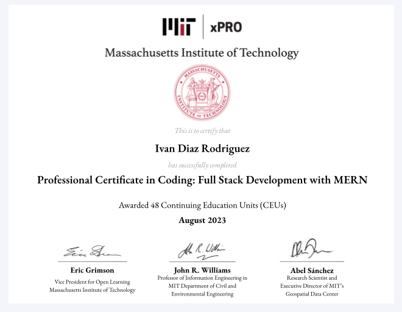
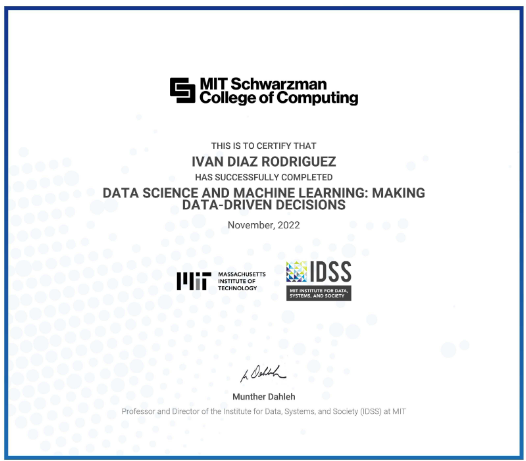
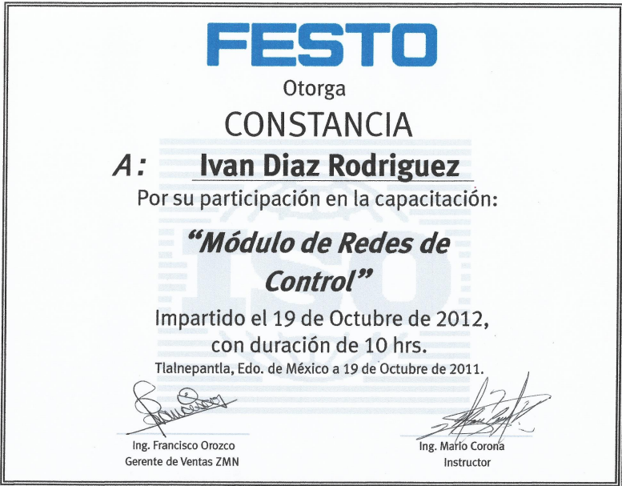
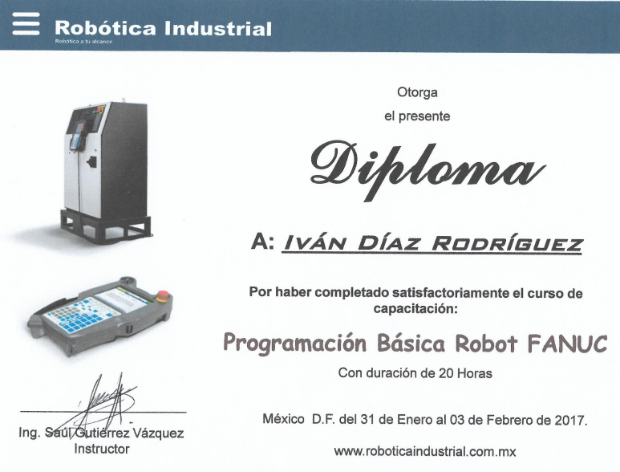
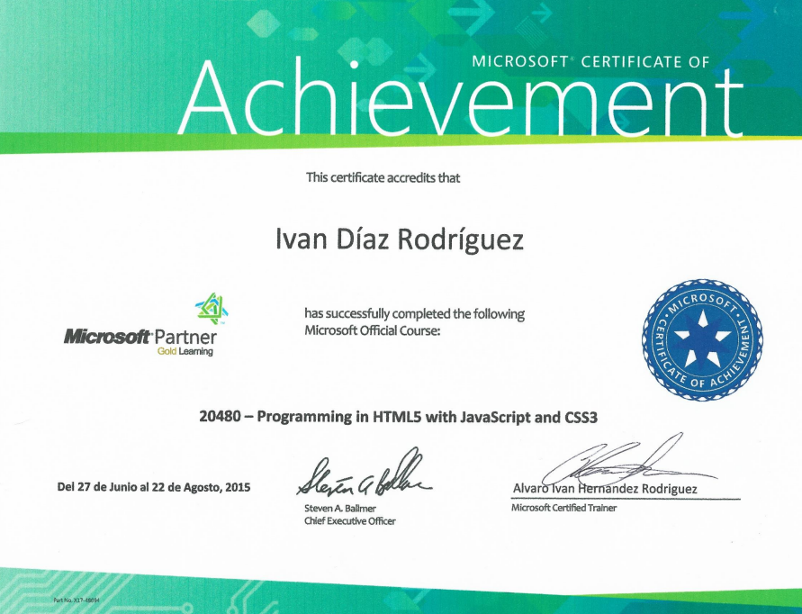

Data System Analyst
Workforce-Toyota EV Battery Manufacturing
August 2023 — March 2026Infrastructure Strategy | Machine Learning | High Availability Systems
Professional achievements
Data Systems Analyst | EV Battery Manufacturing
Summary:
Expert in architecting mission-critical IIoT ecosystems within the manufacturing sector. Specialized in bridging OT/IT gaps through High-Availability (HA) infrastructure, containerized microservices, and AI-driven operational intelligence for 15+ production lines and 300+ stations.
Core Competencies
Infrastructure & Virtualization: Proxmox VE (HA Cluster), Docker, Portainer, YAML Automation.
IIoT & SCADA: Ignition Gateway & Edge, EMQX (MQTT Broker), .NET Industrial Apps.
Data & Backend: Microservices Architecture, TimescaleDB, PostgreSQL, Express.js, Node.js, Python (ML).
Frontend & Visualization: React.js Dashboards, Power BI, Ignition Perspective/Vision.
Professional Experience & Achievements
High-Availability & Containerization: Engineered a resilient server environment using Proxmox HA clusters; orchestrated Docker-based microservices via Portainer to ensure zero-downtime for critical manufacturing services.
Scalable IIoT Architecture: Designed a multi-tier Ignition (Gateway & Edge) architecture synchronized through EMQX brokers, enabling high-throughput data transmission across 300+ stations.
Full-Stack Microservices: Built robust RESTful APIs and Node.js microservices to bridge factory-floor data with real-time React.js dashboards for monitoring KPIs and labor compliance.
Automated Infrastructure: Authored complex Docker Compose configurations to automate the deployment of data brokers and databases, ensuring secure, isolated communication via dedicated virtual networks.
AI-Driven Intelligence: Deployed Machine Learning models for real-time pattern analysis on battery cell production, reducing waste and mitigating financial risks through predictive maintenance.
Developed a custom Retrieval-Augmented Generation (RAG) application powered by Ollama and Llama 3 to provide stakeholders with a natural language interface for:
IT MES Business Analytics
TATA-RIVIAN Project | EV Production
Feb 2022 — Oct 2023MES Developer Engineer & Industrial Data Scientist
Enterprise Integration | Neural Networks | Rockwell FTPC & Strategic Governance
Key Professional Achievements & Narrative
As a Lead IT MES Architect, I spearheaded the end-to-end management, integration, and high-level support of Rockwell Automation’s FactoryTalk ProductionCentre (FTPC) within high-stakes Electric Vehicle (EV) production lines.
My role was pivotal in orchestrating the digital platform architecture, ensuring that the MES (Manufacturing Execution System) acted as a seamless bridge between shop-floor automation and corporate intelligence. By administering complex ETL (Extract, Transform, Load) processes, I ensured data integrity across the enterprise, transforming raw industrial signals into a high-fidelity data fabric. Leveraging SQL Scripting, Python, and C#, I developed custom logic modules within the MES to automate Lean Manufacturing principles, such as real-time Andon systems and automated Kanban replenishment, reducing material handling waste by 15%. Furthermore, I integrated Six Sigma methodologies by programming statistical process control (SPC) algorithms that monitor CP/CPK trends in real-time. This allowed for the early detection of variance, triggering automated 'Stop-the-Line' protocols that significantly reduced Scrap and rework costs through precise, data-driven root cause analysis.
Learning, industrial automation, and strategic leadership consistently empowered the organization to make rapid, data-driven decisions in a volatile global market.
IT MES Coordinator
ABC INOAC | Multi-Site Operations
Aug 2016 — Feb 2022Digital Platform Architecture & PMO Management
Main achievements: Lead teamwork on implementing digital platform architecture working with a multitude of technologies such as PLCs, OPC Servers, HMI and SCADA development, custom software development, integrating databases, working with data historians and OEE’s, etc. Responsible for coordinate IT developer team to engaging with the other departments, guiding and leading them through solutions, and ultimately delivering successful projects and operations.
BI & Data Driven
Defining KPI's and generate digital platforms to implement **OLAP solutions** based on Decision System Support and **Business Intelligence**. Saving cost based on data driven processes.
Six Sigma (DMAIC)
Implementing **DMAIC data driven improvement strategy** to control and improve manufacturing processes. Develop a roadmap with DMAIC to solve problems using a structured approach.
Managing **PMO, Portfolio Project application** for Mexico, Fremont, Livingston and Toronto facilities. **Greenfield at ABC INOAC Queretaro**: Design, lead and implement MES System. Expertise in **KANBAN, SCRUM, and SCRUMBAN** to empower the organization to manage projects with speed and flexibility.
Lead IT to implement the **Roadmap for Digitization, Digitalization, and Digital Transformation**, ensuring all strategic decisions are focused on a data-driven culture.
IT MES Programmer
MAGNA INTERNATIONAL | Global Operations
Nov 2012 — Mar 2016Software Development & Infrastructure Optimization
Main achievements: Lead projects from design, through quotation, development and full implementation of manufacturing and business applications, systems and services. Plan, Design, install, maintain and optimize data management and infrastructure across site to achieve business needs.
Data Strategy
Take data management to information, building HMI and Andon processes and procedures that support manufacturing lines **business decision-making** across the organization. Create value through analysis, generating **data-driven decisions**.
Leadership & Training
Train associates across the organization on MES and MOM business practices, processes and procedures. Establish relationships with vendors and oversee contract support.
International Project Launches
Proven track record in **Launching projects and facilities** at **MAGNA Michigan** and **AIM at Ohio**, providing customer experience and timely response to employee IT escalations during critical startup phases.
Committed to optimizing data infrastructure and management to achieve global business needs.
Expertise & Strategic Knowledge
Technical Knowledge
- Web Programming (HTML/CSS)
- Python & C#
- MVC & Ajax
- SQL Scripting & Managing
- API Rest, Soap & Entity
- Open CV & TensorFlow
- JQuery / Javascript
Electrical & Industrial
- PLC Programming (AB)
- Robot Programming (Fanuc/ABB)
- Vision Systems & Cameras
- Ignition Gateway & Edge
- EMQX-MQTT & Portainer
- PostgreSQL & Timescale
- Motion Control Systems
Administration Skills
- PDCA Continuous Improvement
- Kanban & Scrum
- WBS & Samef
- Six Sigma
- Lean Manufacturing
Strategic Management
- Pareto & Roadmaps
- Descriptive Statistics
- Digital Transformation
- Business Intelligence
- Data Mining
- ITIL-ITSM
AI Developer Skills
- RAG (Retrieval-Augmented)
- Ollama / Llama 3
- n8n Automation
Education
Bachelor's Degree
Control & Automation Engineering (2011)
Master's Degree
IT Management (Current)
CERTIFICATIONS





Verified Academic & Professional Records